Кажется, будто сделать мраморную мастику очень сложно. Однако это не так. Мраморное покрытие – это настоящий тренд в мире выпечки, актуальный прямо сейчас. На самом деле, такое украшение делается легко и быстро и не требует особых навыков. Зато с ним торт станет элегантным, впечатляющим и уникальным.
Как сделать мраморную мастику: Метод 1
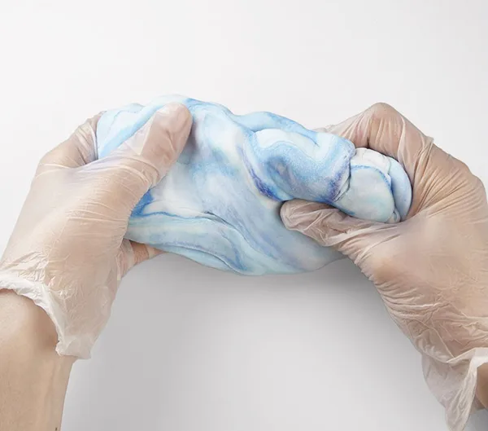
Есть два метода, как сделать мраморное покрытие. Рассмотрим пошагово первый из них, который заключается в том, чтобы неравномерно прокрасить массу.
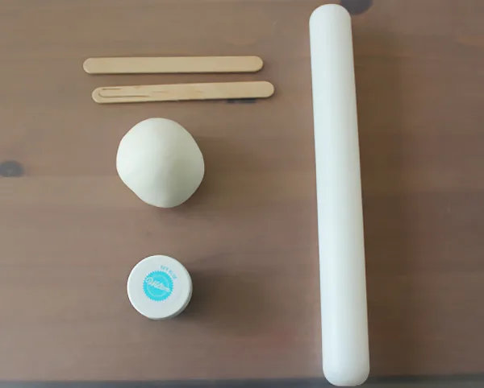
{kind=link}
{kind=link}
- Нужно скатать из мастики длинную толстую колбаску и капнуть на нее красящую жидкость.
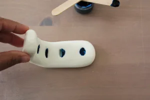
- Завернуть один ее конец к середине, сверху положить второй конец.
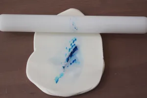
- Слегка прижать и добавить еще каплю красителя.
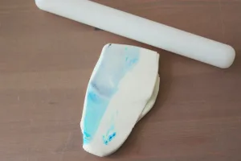
- Опять скатать колбаску и повторить шаг №2.
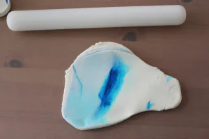
- Продолжать повторять шаги до тех пор, пока масса не станет по мраморности такой, как вы хотите.
Совет!
Главное, не вымешать мастику слишком сильно, иначе она будет однородного цвета.
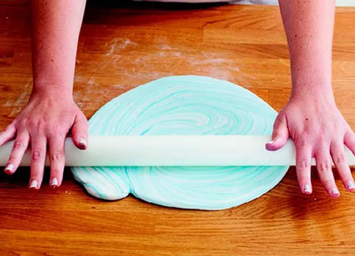
Работайте с готовой массой, как с обычной сахарной пастой. Ею можно обтягивать торты и подставки.
Метод 2
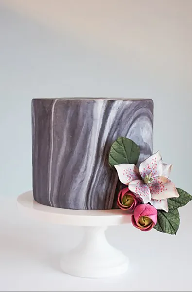
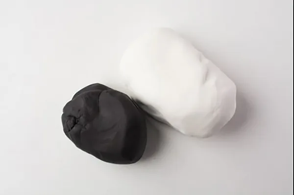
- Взять два кусочка мастики разных цветов, например белого и черного. В другой нашей статье мы описываем, как правильно ее окрашивать. Размер одного из кусков может быть больше, чем другого в зависимости от того, какой цвет будет преобладать.
- Скатать из них две колбаски. Соединить их и скрутить вместе в плотный жгут.
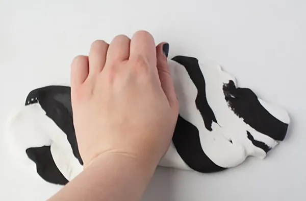
- Скалкой раскатать жгут – получится мраморная паста.
{kind=link}
{kind=link}
{kind=link}
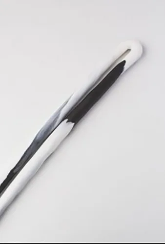
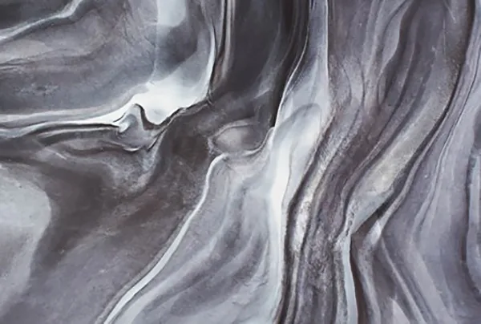
Повторяя эти шаги, вы добьетесь большего эффекта. Можно использовать также более двух цветов.
Посмотрите видео, чтобы увидеть процесс наглядно.
Идеи

Возьмите белую и голубую мастику, чтобы оформить торт морской тематики или имитировать небо с плывущими по нему облаками.
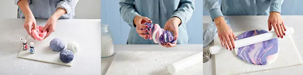
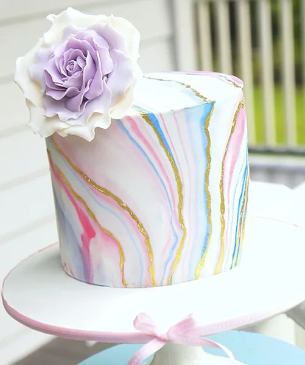
Если сочетать белый, розовый и пурпурный или голубой цвет, покрытие будет гармонировать с цветочным декором.
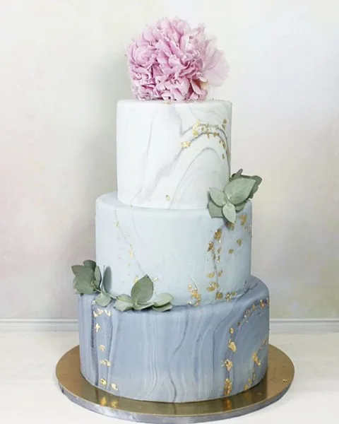

Возьмите два или три куска массы, окрашенные в разные оттенки серого, чтобы имитировать камень.
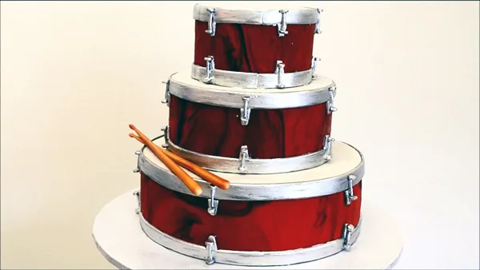
Если совместить несколько кусочков мастики разных оттенков коричневого, можно достичь текстуры древесины.
{kind=link}
{kind=link}
{kind=link}
{kind=link}
{kind=link}
{kind=link}
{kind=link}